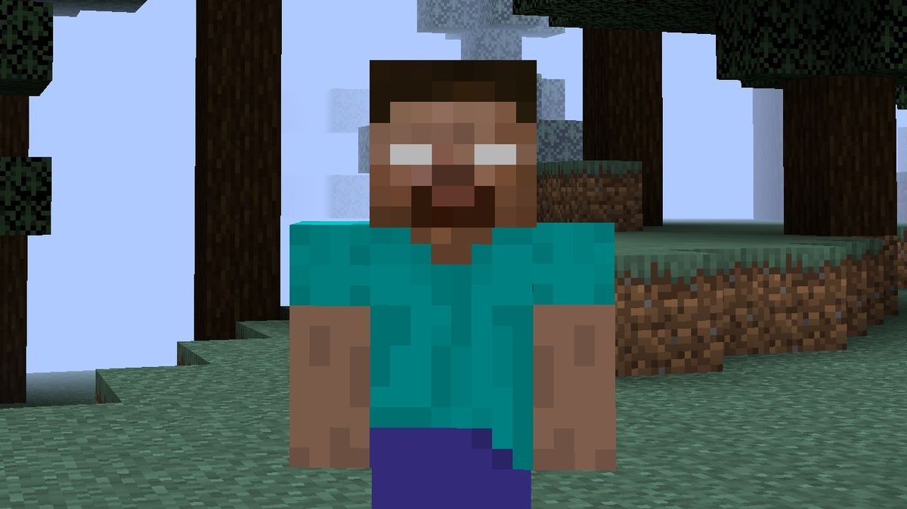
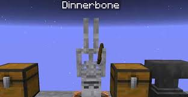

Curiosidades e Mitos de Blocos
A lenda chamada de Herobrine
É a lenda urbana mais famosa e duradoura da história do Minecraft. Ele é descrito como uma entidade misteriosa que se parece exatamente com a skin padrão do jogo (o Steve), mas com uma diferença crucial: seus olhos são totalmente brancos e brilhantes.

Segredo dos nomes "Dinnerbone" e "Grumm"
Se você usar uma etiqueta de nome (Name Tag) e batizar qualquer criatura do jogo como "Dinnerbone" ou "Grumm" (com as iniciais maiúsculas), o animal ou monstro vai ficar completamente de cabeça para baixo. Isso funciona até com o Dragão do End!

O nome original era bem sem graça
Em maio de 2009, o criador Markus "Notch" Persson batizou o protótipo inicial de Cave Game. Semanas depois mudou para Minecraft: Order of the Stone. Percebendo que o subtítulo limitava a liberdade, ele decidiu simplificar para a junção direta das duas mecânicas centrais do jogo: Mine (minerar) e Craft (construir).

O monstro criado a partir de um bug
O Creeper nasceu em 2009 por causa de um erro de digitação do Notch enquanto tentava programar um porco. Ele inverteu as variáveis de altura e comprimento no código. Em vez de deletar a criatura bizarra, magra e alta, ele a pintou de verde, programou para perseguir o jogador silenciosamente e explodir!

Ovelha RGB (Name Tag "jeb_")
Se você nomear uma ovelha como "jeb_" (com a linha decorativa abaixo e letras minúsculas), a lã dela começará a mudar de cor continuamente, passando por todas as cores do arco-íris de forma suave.

O jogo não é "infinito", mas é maior que a Terra
Embora muita gente ache o mundo infinito, ele tem um limite técnico a 30 milhões de blocos de distância do centro. Mesmo assim, a área total transitável é cerca de 8 vezes o tamanho da superfície do planeta Terra.

Um "dia" no Minecraft dura exatamente 20 minutos
O tempo voa no jogo. Um ciclo completo de dia e noite leva exatamente 20 minutos do mundo real. O dia dura 10 minutos, a noite dura 7 minutos, e o amanhecer e o anoitecer levam 1 minuto e meio cada.